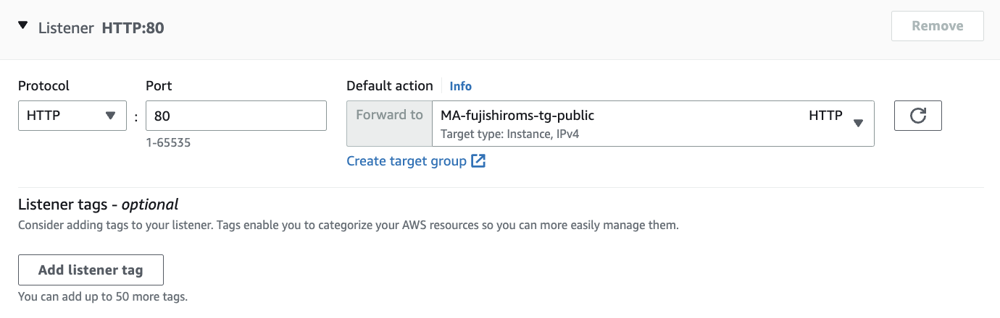

1. AWS ECS上に構築するSpringアプリケーション¶
ECSは、クラスタ単位でDockerコンテナを実行・停止・管理することができるコンテナ管理サービス
複数のAZを跨いで、コンテナ実行できるため、可用性が高い。
塾長の記事AWSで作るクラウドネイティブアプリケーションの基本を実装していく。
ソースコードはgithubのものを参考にする

1.1. VPC環境構築¶
1.1.1. 基本方針¶
複数AZに跨って、Private-SubnetとPublic-Subnetを作成する。
private-subnetには、NAT GWにルーティングされたルートテーブルを付与する。
public-subnetには、Internet GWにルーティングされたルートテーブルを付与する
1.1.2. VPC作成後の成果物¶
成果物
VPC
subnet: private/publicそれぞれ２つ
Internet GW
NAT GW
Elastic-IP: NATGWに割り当たる
ルートテーブル
1.1.2.1. VPC作成¶
ウィザードからVPCなどを選択して設定すると各種自動で作成される
名前タグ
自動設定をONにして、入力しておくと自動作成されるリソースにPrefixを付与してくれる

サブネット
サブネットないのAZの数やPublicとPrivateそれぞれのSubnet数を選択するだけで、自動作成される
CIDRに関しても自動で、割り振りをしてくれる

Internet GW
自動で作成し、VPCに自動でアタッチしてくれるNAT GW
自動で作成し、ElasticIPの取得とアタッチをしてくれるルートテーブル
Public-SubnetにはInternet GWへのルーティングを設定したルートテーブルがアタッチされる
Private-SubnetにはNAT GWへのルーティングを設定したルートテーブルがアタッチされる

1.2. ALBの作成¶
1.2.1. 基本方針¶
Public-Subnetに構築されるBFFは外部向けロードバランサー経由でHTTPリクエストを受け取る
Private-Subnetに構築されるバックエンドアプリは内部向けロードバランサー経由でリクエストを受け取る。
パスルーティングを行うため、ALBおよびターゲットグループ、それぞれのセキュリティグループを作成する。
1.2.2. ALB作成後の成果物¶
Public向けALB Public-Subnetに配置するECS用のインターネットからの接続可能なALB
Private向けALB
Private-Subnetに配置するECS用のVPC内部からしか接続できないALBPublic/PrivateのTargetGrout（ヘルスチェックやターゲットは未設定）
Public/PrivateのALB用のセキュリティグループ
1.2.3. ALBの作成¶
EC2のナビゲーションペインからロードバランサーを選択
Create Load BalancerからALBを選択
名前を設定
スキーム：public：Internet、Private：Internalを選択
アドレスタイプ：Ipv4
VPCとSubnet：作成済のSubnetを選択

セキュリティグループの作成
今後、ECSのセキュリティグループで、接続元を制限する際に本セキュリティグループと紐づけるので新規でSGを作成
VPCの設定変更や Nameタグの付与を忘れない
Publicの場合は、0.0.0.0/0をインバウンドに設定、Privateの場合はVPC内部だけをインバウンドに設定

ターゲットグループの作成
ターゲットの種類には、ECSのクラスターのインスタンスが対象となるのでインスタンスを指定を指定する。
ヘルスチェック先やターゲットの登録を行う。 Protocol Portは80でOKターゲットは、動的マッピングの場合、ECSでサービス作成時にTGを紐付けると自動で設定されるので、設定しなくて良い。

リスナーの設定（ロードバランサのプロトコル・ポート）
HTTPの80を指定して、作成したTGを設定。
ポート設定などは、アプリ側や動的マッピングのことは考えなくてOK。 基本的に外部からは80や443で受け付けて、パスルーティングでTGに流して、動的マッピングしていくイメージ。 ルールの設定
ALBのListenersからRulesを選択して、パスルーティングの設定をする。 パスを指定するときは、アプリケーションが利用するパスがxxxであれば、/xxx/*という形で設定する。
1.3. Springを使用したコンテナアプリ実装¶
1.3.1. 基本方針¶
backendとbackend-for-frontのPJを作成する。
backend-for-frontは、HTML画面を表示、ボタンを押下するとbackendのサービスを呼び出して、user情報を受け取り、画面に表示する。
backendでは、backend/api/vi/usersの受け口を作成して、事前定義したuser情報を返却するコードを実装する。

1.3.2. 成果物¶
bffのSpring PJ
backendのSpring PJ
1.3.3. backend¶
User情報をmodelに格納して、Controllerでパスの設定や処理を記述する。
各種ファイルの役割
backend/app/model/User.java
User情報を定義しておく(DBの代わり)backend/app/web/BackendRestController.java
パスの設定とUser情報の作成、返り値の定義
"/api/v1/users"にアクセスがくると、User情報を返すbackend/config/App.java
BackendアプリのSpringBoot起動クラスbackend/config/MvcConfig.java
Controllerを読み取って、RESTAPIとして動作させるため、ComponentScanの対象を指定resources/application.yml
サーバー上のWebアプリケションを識別するパスであるコンテキストパスを設定
これによって、URLがhttp://localhost:8080/backend/api/v1/usersとなる。
1.3.3.1. [トラブルシュート]User.javaのLombokで躓いた話¶
■背景
Lombokとは、getterやsetter、builderなどを自動生成してくれるライブラリである。
こちらのサイトがわかりやすいLombokのBuilderパターン解説
■問題
User.javaでlombokを使って@builderしているのに、BackendRestController.java側で認識してくれない。
■解決策
STSではlombokは適用されていないので、STSでLombokを有効にするために、lombok.jarをDLして、STSのiniファイルを対象にする。
stsでlombokを利用するの手順に従えばOK
1.3.3.2. [実装上の工夫]application.ymlを環境を切り替える¶
構築環境に応じて、エンドポイントなどを切り替える際に、複数のapplication.ymlを準備して、利用対象を切り替える。
Spring Bootでのプロファイルを使った環境切り分け
■application-dev.ymlの設定 基本はapplication.ymlが利用されるがapplication-xxx.ymlを作成すると、xxxとして、application.ymlは認識してくれる。
■application.ymlの設定
以下を設定すると、application-dev.ymlがデフォルトで読み込まれるようになる。
spring:
profiles:
active: dev
■利用profileの設定
jarファイルの実行時に指定してあげる。以下だとdevが利用される
java -jar spring-boot-application-properties-sample-1.0.0.jar --spring.profiles.active=dev
1.3.4. bff¶
各種ファイルの役割
backendforfrontend/app/model/User.java
User情報を定義しておく(DBの代わり)backendforfrontend/app/web/BackendForFrontendController.java
index.htmlからのリクエストを受け取って、backendのAPIへ問い合わせるbackendforfrontend/app/web/ServiceProperties.java
ConfigurationPropertiesを利用してapplication.ymlのdns名を取得backendforfrontend/config/MvcConfig.java
RestOpearationsの生成時にdns名を指定してREST呼び出し先を指定backendforfrontend/config/WebApp.java
Backend -for-frontアプリのSpring起動クラスresources/static/index.html
最初の画面resources/template/users.html
userを取得した後の画面resources/application.yml
applicationのコンテキストパスを/backendforfrontに設定
DNSの宛先を指定。これをServicePropertiesやMvcConfigから読み取っている。
1.3.5. chap3の疑問点¶
1.3.5.1. application.ymlの指定¶
第4回 Dockerコンテナの作成の設定ファイルの指定について
CMD java -jar -Dspring.profiles.active=production /usr/local/mynavi-sample-aws-ecs/backend-for-frontend/target/mynavi-sample-aws-ecs-backend-for-frontend-0.0.1-SNAPSHOT.jar
ここで、productionを指定しているが、applicaiton-production.ymlは存在しない。
productionを指定すると、application.ymlが指定されるかと思ったが、実際動かなかった。
1.3.5.2. backendのdns指定¶
backend側は、albを指定する必要がないが、application.ymlでserviceとして、albを指定している。これは利用されていない？ マイナビの説明でも触れていないが、gitには記述されている。
service:
dns: https://sample-ecs-alb-1379155413.ap-northeast-1.elb.amazonaws.com/
1.4. Dockerコンテナの作成¶
1.4.1. 基本方針¶
DockerFileから、DockerImageを作成し、DockerImageからdockerコンテナを起動することで動作確認する。
最後に作成したdocker ImageをECRにpushする。
1.4.2. 成果物¶
Docker File bffとbackend
Docker Image bffとbackend
ECRのレジストリ bffとbackend
1.4.3. ECR作成¶
最初に、docker ImageをpushするためのレジストリをAWS上に作成しておく。
ECRから、新規作成で、bffとbackendのレジストリを作成
1.4.4. DockerFileの説明¶
BFF側のdockerFile
今回はjavaのver17で開発したので、色々変更しながら動かしている。
# Docker Imageとしてcentos7
FROM centos:centos7
# git などのインストール
RUN yum install -y \
wget tar iproute git
# java17のインストール
RUN yum install -y https://cdn.azul.com/zulu/bin/zulu-repo-1.0.0-1.noarch.rpm
RUN yum install -y zulu17-jdk
# mavenのインストール
RUN yum install -y ca-certificates
RUN wget http://repos.fedorapeople.org/repos/dchen/apache-maven/epel-apache-maven.repo -O /etc/yum.repos.d/epel-apache-maven.repo
RUN sed -i s/\$releasever/6/g /etc/yum.repos.d/epel-apache-maven.repo
RUN curl -OL https://archive.apache.org/dist/maven/maven-3/3.5.2/binaries/apache-maven-3.5.2-bin.tar.gz
RUN tar -xzvf apache-maven-3.5.2-bin.tar.gz
RUN mv apache-maven-3.5.2 /opt/
# PATHの追加
ENV JAVA_HOME /usr/lib/jvm/zulu17
ENV PATH $PATH:/opt/apache-maven-3.5.2/bin
ENV PATH $JAVA_HOME/bin:$PATH
# PJのコピー
RUN git clone https://github.com/MisakiFujishiro/ecs_backend
RUN mvn install -DskipTests=true -f /ecs_backend/pom.xml
# タイムゾーンの変更
RUN cp /etc/localtime /etc/localtime.org
RUN ln -sf /usr/share/zoneinfo/Asia/Tokyo /etc/localtime
# コンテナのポート解放
EXPOSE 8080
# Javaの実行
CMD java -jar -Dspring.profiles.active=production ecs_backend/target/mynavi-sample-aws-ecs-backend-0.0.1-SNAPSHOT.jar
1.4.5. Docker Imageの作成¶
docker buildコマンドで、DockerFileからイメージを作成する。最後の.はカレントディレクトリにあるDockerfileを指定している。
docker build -t [IMAGE_TAG]:[IMAGE_VER] .
docker build -t bff:v1 .
今回自分のPC（MacのM1チップを利用していたため、以下のコマンドを含めて実行しないとECSでうまく動かなかった
docker build --platform linux/amd64 -t bff:v1 .
1.4.6. Docker Containerの作成¶
docker runコマンドでイメージからコンテナを起動する
docker run --name [YOUR_CONTAINER_NAME] -it [IMAGE_TAG]:[IMAGE_VER]
1.4.6.1. コンテナ内からlocalhostへ接続¶
Dockerコンテナ同士で通信して動作確認するために、--add-host=host.docker.internal:host-gatewayこれを追加してコンテナを立ち上げる。
これを設定すると、dockerコンテナ内から、host.docker.internalを指定するとホスト側にアクセスしてくれる。
docker run -p 18081:8081 --name bff -it --add-host=host.docker.internal:host-gateway bff:v1
1.4.6.2. application.ymlの設定¶
事前にapplication-dev.ymlやapplication-production.ymlなどを作成しておき、それぞれ接続先を変更しておく。
docker runする際に、-Dspring.profiles.activeによって、指定するapplicaiton.ymlの接頭辞を指定する。
java -jar -Dspring.profiles.active=production ecs_backend_for_front/target/mynavi-sample-aws-ecs-backend-for-front-0.0.1-SNAPSHOT.jar
1.4.7. DockerをECRにpush¶
認証トークンを取得して、レジストリに対して、dockerクライアントを認証
aws ecr get-login-password --region ap-northeast-1 --profile my_profile | docker login --username AWS --password-stdin 626394096352.dkr.ecr.ap-northeast-1.amazonaws.com
Docker Fileからイメージを作成。(backendの場合)
docker build -t ma-fujishiroms-ecr-backend .
タグをECRと一致させる(backendの場合)
docker tag ma-fujishiroms-ecr-backend:latest 626394096352.dkr.ecr.ap-northeast-1.amazonaws.com/ma-fujishiroms-ecr-backend:latest
ECRにpush(backendの場合)
docker push 626394096352.dkr.ecr.ap-northeast-1.amazonaws.com/ma-fujishiroms-ecr-backend:latest
1.4.7.1. [トラブルシュート]wgetでエラーが発生¶
■課題
Apache Mavenのインストールに必要な資材をwgetコマンドで取得に失敗
#6 2.044 ERROR: cannot verify repos.fedorapeople.org's certificate, issued by '/C=US/O=Let\'s Encrypt/CN=R3':
■解決策
以下を追加して解消
RUN yum install -y ca-certificates
1.4.7.2. [トラブルシュート]apache-mavenがインストールできない¶
■課題
apache-mavenがインストールできない
=> ERROR [6/6] RUN yum install -y apache-maven 7.5s
------
> [6/6] RUN yum install -y apache-maven:
#9 0.263 Loaded plugins: fastestmirror, ovl
#9 0.340 Loading mirror speeds from cached hostfile
#9 0.341 * base: ftp.yz.yamagata-u.ac.jp
#9 0.341 * extras: ftp.yz.yamagata-u.ac.jp
#9 0.341 * updates: ftp.yz.yamagata-u.ac.jp
#9 7.105 http://repos.fedorapeople.org/repos/dchen/apache-maven/epel-6/aarch64/repodata/repomd.xml: [Errno 14] HTTPS Error 404 - Not Found
#9 7.105 Trying other mirror.
#9 7.105 To address this issue please refer to the below wiki article
#9 7.105
#9 7.105 https://wiki.centos.org/yum-errors
#9 7.105
#9 7.105 If above article doesn't help to resolve this issue please use https://bugs.centos.org/.
#9 7.105
#9 7.351 No package apache-maven available.
#9 7.395 Error: Nothing to do
■解決策
apache-maven-3.5.2をcurlでDLして、パスを通した
1.4.7.3. [トラブルシュート]mvn buildで、テストが実行されてエラー¶
■課題
mvn installでテストエラー
■解決策
一旦は、testをスキップする形で対処
mnv install -DskipTests=true -f pom.xml
1.4.7.4. [トラブルシュート]ECRにpushできない。¶
■課題
ECRにpushできない。EOFとなってタイムアウトしてしまう
■解決策
docker pushを実行してる環境のアクセスキーを設定していないのが原因？？
サイトを参考に、IAMでアクセスキーを作成して、ローカルPCに登録したらうまくできた。
この運用は正しい？アクセスキーの情報はコンソール上で入力した以外は利用していない。
1.5. ECSクラスターの作成¶
1.5.1. 基本方針¶
クラスターの設定を行う。PublicとPrivateそれぞれでクラスターを作成する。
セキュリティグループの設定として、それぞれのクラスターは、ALBからのリクエストを許可する。 具体的には、ALBが属するセキュリティグループを対象として、ポートが動的マッピングされることを考慮して32768-61000のポートを許可する
ECSでは以下の３種類のIAMロールの設定が必要であり、混乱するので、事前に 参考サイト などで確認しておくこと
1.5.2. 成果物¶
ECSクラスター publicとprivate
ECSクラスター用のIAM
セキュリテイグループ：ALBのSGからのアクセスを許可する。
1.5.3. ECSクラスター作成¶
EC2+ネットワーキングから各種設定を行う。
EC2はECSに付随して自動で作成される。インスタンスタイプは少し大きめでOK。今回はt2.mediumにした。（作り直しが面倒なので）
1.6. ECSタスクの定義¶
1.6.1. 基本方針と成果物¶
ECS上に起動するコンテナの各種設定を行う
タスク実行ロール：ECRとの接続やCloudWatchへのログを送るための実行ロール
タスクロール: 各タスクが行う処理内容に応じたロール
port：コンテナとECSホストのポートマッピングの設定をする
1.6.2. IAMの作成¶
IAMからRoleを作成して、ECS Taskを選択して、AmazonECSTaskExecutionRolePolicyを付与
1.6.3. ポートの設定¶
ポートフォワーディングの設定が必要。
コンテナポート：アプリと一致させる
ホストポート：動的フォワーディングをするので0
1.6.4. メモリの設定¶
ハードメモリ：コンテナに予約するメモリ ソフトメモリ：メモリ使用量の最大値で超えるとコンテナが落ちる
今回は両方1024にした。
1.7. ECSサービスの実行¶
1.7.1. 基本方針¶
1.7.2. 成果物¶
ECSのサービスとタスク。
実際に動く画面
1.7.3. サービスの作成¶
サービスを作成していく中で、ALBやTGを設定する。
これは初回しか設定できないので、設定するときにALBとTGの設定を再確認しておく。
1.7.3.1. [トラブルシュート]タスクが起動しない：exec format error¶
CloudWatchを確認すると以下のエラー
exec /bin/sh: exec format error
調べてみると、M1チップを利用して、作成したdocker imageは動かないらしい！？ ECS + Fargate で exec format error
docker buildで以下のオプションを指定してみたらうまくいった。
docker build --platform linux/amd64 -t ma-fujishiroms-ecr-bff:v2 .